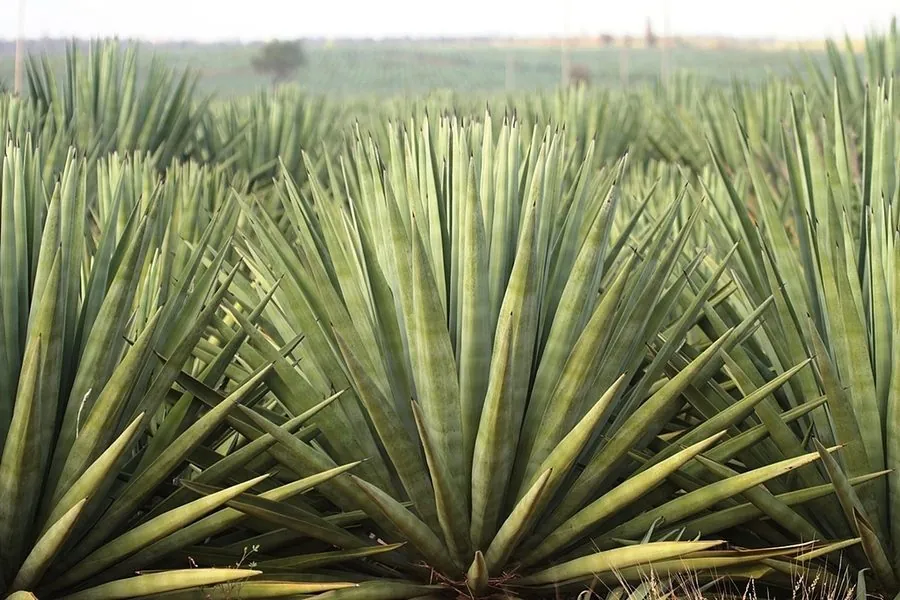

农作物与经济植物 · 植物界
剑麻 Agave sisalana

剑麻是龙舌兰科多年生草本，叶片剑形、纤维强韧，可制绳索、地毯和麻袋，是重要的硬质纤维作物。
- 分类
- 门被子植物门纲单子叶植物纲目兰目科龙舌兰科属龙舌兰属
- 栖息环境
- 热带、亚热带干旱丘陵，喜光、耐旱耐瘠
- 地理分布
- 原产墨西哥尤卡坦半岛，现栽培于巴西、非洲与中国华南
- 保护级别
- 暂无评估（栽培作物）
物种志
剑麻是龙舌兰科多年生草本，茎短缩，叶片剑形，长可达 1–1.5 m，肉质坚硬，顶端有尖刺，边缘无刺或疏生小刺，呈莲座状排列。花序高大，可达数米，花黄绿色。植株生长 6–8 年后抽薹开花，果实为蒴果，内含多数种子，但栽培种多不结实。
剑麻原产墨西哥尤卡坦半岛，19 世纪起在巴西、坦桑尼亚和中国南方大规模栽培。它喜高温、光照充足，耐旱耐瘠，适宜在排水良好的沙质土生长，忌积水。叶片割下后经刮麻、清洗、晾晒可得剑麻纤维，纤维强韧、耐海水腐蚀，用于制绳索、渔网、地毯和麻袋。中国广东、广西、海南、福建等地有栽培，剑麻纤维也可制抛光轮和特种纸。
形态与习性
- 叶剑形，长 1–1.5 m
- 叶尖有坚硬尖刺
- 花序高大，可达数米
- 纤维强韧，耐海水腐蚀
- 用途绳索、渔网与地毯
- 主要产区广东、广西、海南等地
趣味知识
- 剑麻叶片里的纤维强韧耐海水，适合制船用绳索和渔网。
- 剑麻原产墨西哥，巴西和坦桑尼亚是主要产区。
- 剑麻一生只开一次花，开花结实后母株逐渐枯死。